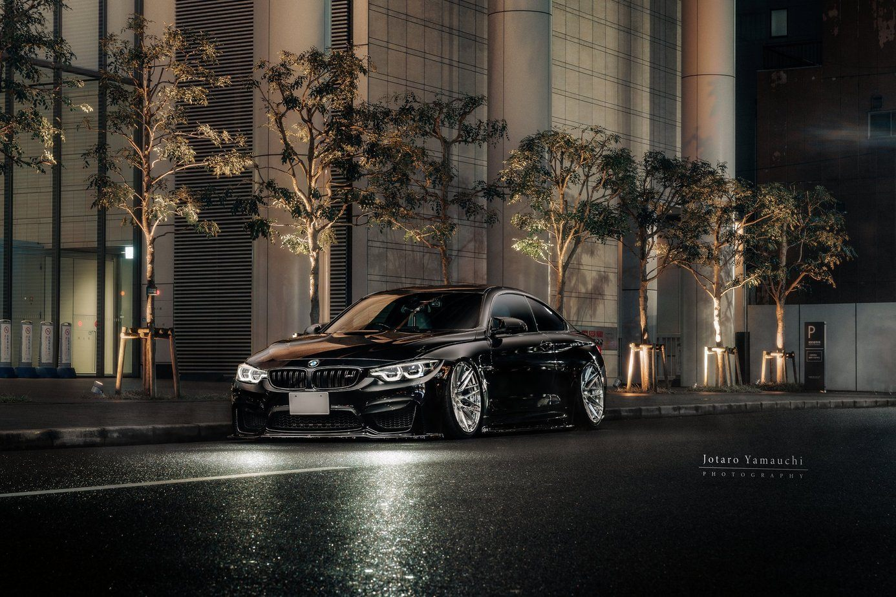
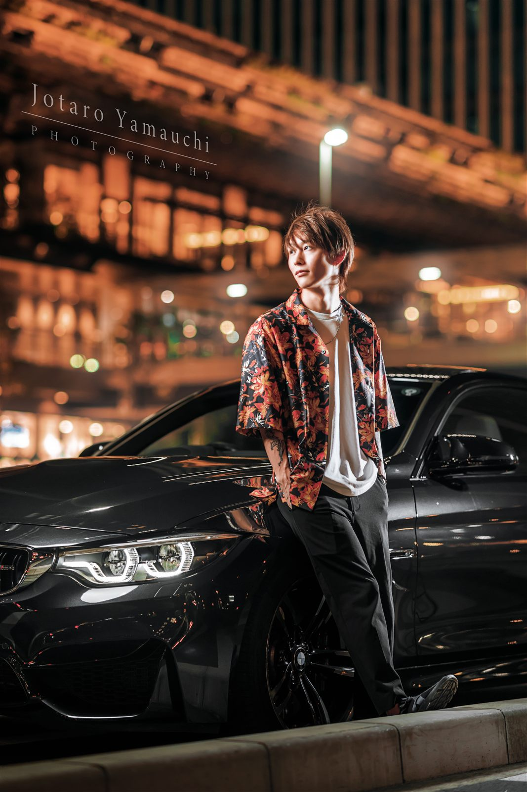

About

はじめまして、よしろうです。
トヨタ系の自動車部品メーカーで、安全製品の製造に携わっています。
クルマを好きになったのは父の影響。以前はフェアレディZ（Z34）に乗っていて、 今は BMW M4 とのカーライフを楽しんでいます。
- 名前
- よしろう
- 出身
- 愛知県
- 趣味
- ドライブ / 撮影会 / カスタム
- 愛車
- BMW M4（F82）
- 前の愛車
- 日産 フェアレディZ（Z34）
My Car

BMW M4 F82 / 2017
ここに愛車への思いや、こだわりポイントを書きます。
- ボディカラー
- ブラック
- ホイール
- BC Forged HCA386S
- サイズ
- F: 20×9.5J −3
R: 20×11J +19 - 足回り
- APgarage pneumatec エアサスペンション
- エアロ
- MAXTON design
- イベント
- Fenderist エントリー F154
STOCK FENDER 部門
Gallery
Photo: Jotaro Yamauchi Photography